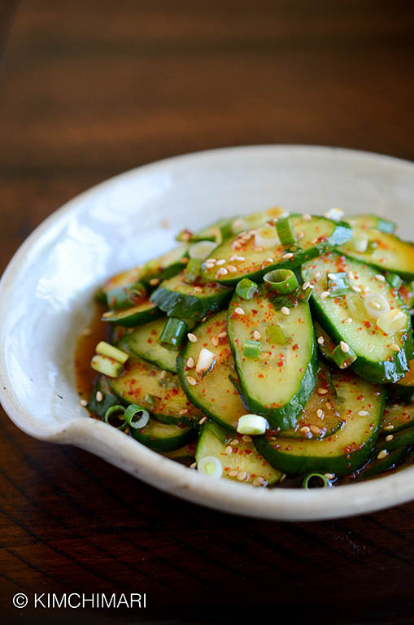

Korean Cucumber Salad

Description
Thinly sliced cucumbers, sliced scallions, and sesame seeds coated in a
soy and vinegar mixture.
Ingredients
- 1 cucumber (Japanese, English, Persian, Pickling are all good) - about 1½ cup sliced for 1 cucumber
- 1 Tbsp soy sauce (Jin Ganjang)
- 2 Tbsp rice vinegar
- 1 Tbsp sugar
- ½ tsp Korean red chili powder
- ¼ tsp sesame seeds
- 2 green onions (chopped)
Steps
- Slice cucumbers into thin slices. Around 1/8 inch (3 mm).
- Mix soy sauce, vinegar and sugar in a bowl. Pour soy vinegar into the bowl with cucumbers.
-
Then, add 1/2 tsp chili powder and sesame seeds. Mix and taste.
Add more chili powder if you want. Doing it in this order allows
you to taste and control the amount of chili powder based on how
spicy you want it.
- Add chopped green onions and mix again.
Notes
You can refrigerate for few days and can be served cold.
Just freshen it up with some fresh green onions and sesame seeds.
This dish is best suited for lighter meals such as sides to fried rice,
fish, noodles, etc.